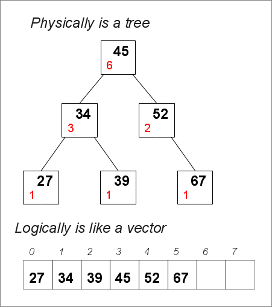
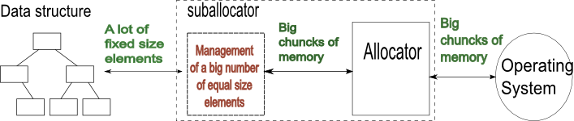
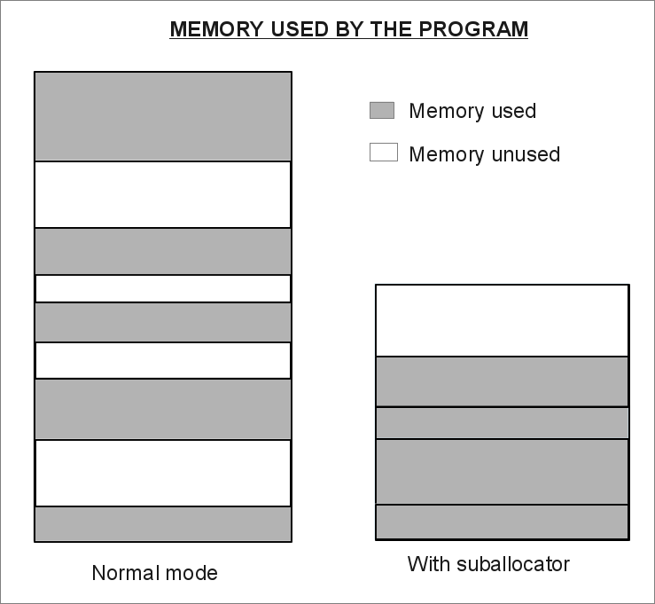
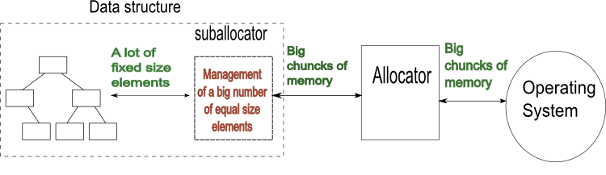

The [ Counter Tree + Suballocator ] Library
Francisco
Jose Tapia Copyright © 2010-2012 Francisco Jose Tapia
1.-
Introduction
The goal of this library is to improve and extend the functionality
of existing and well know tools of C++. The library provide you
simplicity, versatility and speed in your code with a minimal effort
for to learn and use.
If you know the STL classes vector, set , multiset, map , multimap
and allocator, you know more than 95% needed for to use this library.
This project is the joining of two separate ideas, the countertrees
and the suballocators. Each one have it own sense and utility. But
they are complementarity, and working joined express the goal of this
project, providing tools for to improve the user's work.
1.1.-
Description of the Counter Trees

The counter trees are trees where each node have an additional
counter. This counter represent the number of nodes under it,
including itself. This counter permit us to access to the elements by
the position, in the same way than a vector. It is a random access
container and, of course, random access iterators.
This library is an implementation of a binary balanced counter tree
with pointers to the first and last elements . It is red-black with an
additional counter en each leaf. I didn't find any implementation of
the binary Counter Trees, except my version of 14 years ago. Due this,
all the algorithms for insert,
delete, sort, find and balance was created and developed
specifically for this project, and they are not based in any
previous code or implementation.
The basic idea of this class is simple, you can use like a vector. It
permit access to the elements by their position. The allocators are
random access, like in a vector. The insertion or deletion of one
element don't imply any movement of data. It's only insertion or
deletion of a node in the tree.
The
operations of insertion, deletion and access to elements are
O(log(N)) operations.
The elements in the Counter Tree can be ordered or unordered.
With unordered elements, you
have a countertree::vector_tree.
This is like a vector with identical interface, identical operations
than std::vector and std::deque . This vector_tree have the same speed
inserting or deleting in any position of the vector. The difference
is the performance. The std::vector
it is very fast inserting and deleting in the first or in the last
position, but very slow if you must insert or delete in central
positions. The countertree::vector_tree
is slower than the std::vector inserting or deleting in the first and
last position, but much more faster inserting in central positions.
With
ordered elements, you have
the classes
countertree::set,
countertree::multiset, countertree::map and countertree::multimap.
They have the same interface than the STL std::set, std::multiset,
std::map,std::multimap classes, plus the capacity of access to the
elements by the position like in a vector
The iterators are random access. You can subtract two iterators for to
know the number of elements between them.
1.2.-
Description of the Suballocators
Many STL data structures need to allocate and deallocate a big number
of elements of fixed size. The allocator is the data structure defined
in the STL, as interface between the data structures and the memory
provided by the Operating System (O.S.). The allocator manages the
memory received from the Operating System, and the memory requested in
the allocate operations and the memory returned in the deallocate
operations.
The allocators have 4 problems :
- The speed of the
allocation and deallocation
- The memory consumption.
Many allocators, when allocate one elements, allocate too,
additional information for the deallocating. This increase the size
of the memory used, and we can find that the same set of elements
need a 50% more memory in GCC than in Visual C++ 10.
- Many allocators don't return
well the unused chucks of memory to the Operating System
and the memory used by the allocator is the maximum used and never
decrease. If you have a small number of elements, you have a small
problem, small resources and small time operations. But, if you have
several millions of elements allocated, perhaps you are using
several GB of memory. Running a program with GB of memory don't
used, because the allocator don't return the memory request, is a
great waste of resources.
- The last problem is the cache
performance. If the elements allocated are dispersed, you
obtain a poor cache allocation, and poor performance. The difference
can be until 30% of the time This effect is named as data locality
improvement.
The
suballocator is a solution to
these problems. The suballocator is a layer between the
allocator and the data structures, compatible with any allocator with
the STL definition. The suballocator request memory to the allocator,
and return to it when unused.


With the suballocator
a)
We
have a very fast allocation (around
2 times faster than the std::allocator of GCC 4.7, CLANG 3.0 and
3 times than Visual Studio 10 *See details in the Suballocator
Benchmark)
b)
Return memory to the allocator,
for to be used by others types of data. The unused memory is
returned to the allocator ant to the Operating System decreasing the
memory used by the program,
( as you can see in the
Suballocator Benchmark )
c)
You can use with any allocator if
it is according with the STL definition. The suballocator
provides speed and memory management to any allocator . You can use
with the STL list, set, multiset, map and multimap, and with any other
data structure with fixed size elements allocation.
d) When the data structure allocate a chuck of memory,
the
suballocator don't add any other additional information ( for
to allocate 50.000.000 uint64_t elements, the GCC allocator use 1.95
Gigas of memory. The same with the suballocator need 0.92 Gigas of
memory)
e)
The improvement in the cache
performance. The time obtained by the std::set + suballocator,
compared with a std::set, in the same benchmark is around 30% - 40%
lower.
1.3.-
Description of Counter Trees + Suballocators
The next step is to join the two previous concepts.
The idea is to integrate the suballocator inside the data structure.
With this, you have data structures, with identical interface than the
STL structures with the same name, but with an internal pool, which
increase the speed of the data structure, and return memory to the
allocator and the Operating System when don't use.
You have the more speed than the STL data structures and more memory
control with the easy use of the STL data structures.
With this, we have, in the namespace countertree, the classes
vector_tree_pool, set_pool, multiset_pool, map_pool and multimap_pool,
which are the data structures with the suballocator integrated.

 Boost C++
Libraries
Boost C++
Libraries